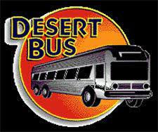

|
Tout est dans le titre : le jeu se résume à conduire un bus dans le désert. Une longue route, parsemée de quelques panneaux et broussailles. C'est souvent le sujet de stream de charité, où des joueurs se relayent pour maintenir la distance le plus longtemps possible en reversant les éventuelles donations à des causes humanitaires. |
|
Desert Bus est un jeu vidéo de simulation développé par Imagineering et édité par Absolute Entertainment. Conçu par Penn et Teller comme
une satire à l'encontre des polémiques concernant la moralité dans les jeux vidéo, le jeu consiste à simuler la conduite d'un bus en temps
réel pendant huit heures sur une route déserte entre Tucson et Las Vegas.
|
© Developer: Imagineering / Publisher: Absolute Entertainment / Platform: 3DO Interactive Multiplayer, PC, Sega CD / Genre: Party / Release Unreleased
Retour en haut de la page